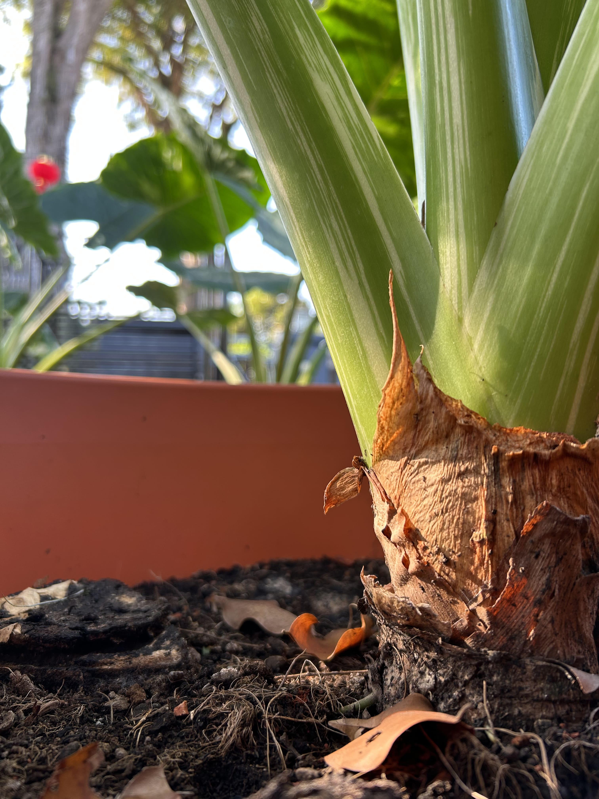

We'd be happy to share our expertise and explore potential solutions to address your
inquiries.
LET'S EMBARK ON YOUR DREAM PROJECT
Strong Roots, Strong Plant: The Importance of a Healthy Root System
O VERCARDO VERCARDO VERCARDO
It’s all about roots at Vercardo.

In essence, thriving plants boast robust roots. Indeed, half of the secret to cultivating stunning plants lies in nurturing healthy roots.
Vigorous, plump, plentiful roots don’t just fall out of the sky. However, once achieved they:
• Foster the growth of splendid blooms and luxuriant, shiny foliage.
• Bind soil, preventing erosion during heavy rainfall.
• Enhance the absorption of water and nutrients, vital resources for plant vitality.
• Yield sturdier stems and foliage, better equipped to withstand environmental pressures, particularly in harsh climates.
But what exactly defines "healthy roots"?
Next time you visit a nursery, gently upend a pot and observe. Roots that exhibit a white or tan hue, feel succulent to the touch, and feature fleshy white tips signal a robust root system. Conversely, roots that appear brown, soft, and disintegrate easily indicate suboptimal health.
How We Cultivate Our Plants
Every one of the various plant varieties we cultivate undergoes nurturing care in a bespoke soil blend, fostering robust root development. We enrich the soil mix with mycorrhizae, a beneficial fungus that aids in moisture and nutrient absorption by the roots.
There's plenty you can do to maintain healthy roots (see below). However, if your plant arrives home with insufficient, small, or unhealthy roots, you'll face an uphill battle. Vigorous top growth, characterized by abundant deep green leaves, buds, and flowers, signifies excellent plant condition. Yet, it's crucial to inspect the roots as well. A plant that excels from root to crown is the optimal starting point.
O VERCARDO VERCARDO VERCARDO
How Can I Nurture My Healthy Roots?
Now that you have your healthy, well-rooted plant at home, with the perfect spot picked out for it, let’s ensure it stays in peak condition, starting with the roots.
Water deeply and thoroughly only when necessary. But what does "necessary" mean? Well, it's a two-part answer. Excessive watering can suffocate and rot roots, deterring them from reaching deeper into the soil for water. Conversely, inadequate watering, especially for newly planted specimens, risks root desiccation before they establish themselves. Therefore, newly planted plants require more frequent (albeit shorter) watering sessions, potentially daily or every other day depending on your climate. For established plants, wait until you notice the soil surface changing color from dark to light before watering deeply but infrequently. Container plants require extra vigilance and care to avoid waterlogging. We highly recommend investing in a moisture meter, readily available at any local hardware store.
Nourish your soil to nourish your plants. Regular applications of organic matter such as compost provide essential nutrients, improve soil structure, and enhance aeration, promoting healthy roots.
Handle planting, relocating, or repotting with care to avoid root disturbance or breakage.
Apply a 2-3 inch layer of mulch after planting to keep roots cool and moist while also suppressing weed growth. Weeds compete with your newly planted specimens for water and nutrients—smother them!.
COLLABORATE WITH VERCARDO – BRING YOUR VISION TO LIFE
We're passionate about transforming ideas into thriving landscapes, functional buildings, and flourishing horticultural spaces. We don't just offer services; we become your trusted advisor, sharing insights, suggesting creative options, and answering your questions every step of the way.